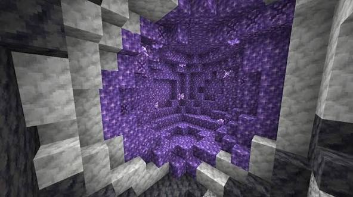
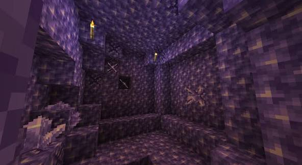
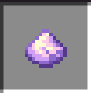
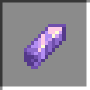
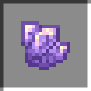
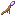
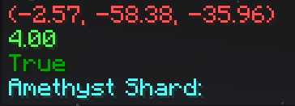
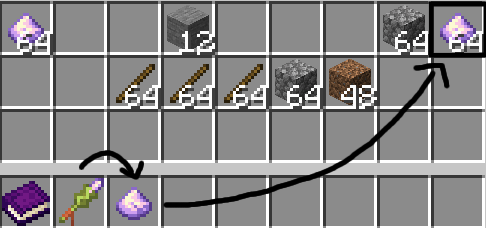

Thông tin cơ bản
Thông tin cơ bản
Ma thuật của Hex bắt nguồn từ Media, nguồn năng lượng tồn tại trong quặng Amethyst (Thạch anh tím).
Amethyst có thể được lưu trữ và sử dụng dưới 3 dạng:


Mỏ Amethyst dưới lòng đất, có lớp vỏ bằng đá basalt và calcite.

Bột Amethyst, chứa 1 Media.
Mảnh Amethyst, chứa 5 Media.
Tinh thể Amethyst, chứa 10 Media.
Cơ chếMa pháp được cấu tạo từ các Pattern (pháp tự), các pháp sư sử dụng 1 loại gậy đặc biệt, có đầu làm bằng Tinh thể Amethyst, để vẽ Pattern trong không gian.
Stack
Stack là nơi lưu trữ các Iota, có thể hiểu là dữ liệu sử dụng cho ma pháp.
Các Iota được sắp xếp theo thứ tự sau → trước.
Giống như trong lập trình, Iota chia làm nhiều loại:
- Vector
- Number (số)
- Entity (thực thể): chỉ các sinh vật, vật phẩm
- Pattern (mẫu vẽ)
- Boolean (logic): chứa giá trị True (đúng) hoặc False (sai)
- Type (loại): phân loại các kiểu dữ liệu
- List (danh sách): chứa các Iota khác
Các Pattern hoạt động theo cơ chế nhận - trả (Kí hiệu: nhận → trả) các Iota trên Stack.
Quản lí vật phẩm
Đối với các ma pháp sử dụng vật phẩm, hệ thống sẽ tự chọn loại vật phẩm bên phải, gần gậy phép nhất
Sau đó, hệ thống tiếp tục chọn vật phẩm cùng loại ở cách xa ô vật phẩm ban đầu nhất để tiêu thụ.

Minh họa Stack

Chọn Bột Amethyst ở xa nhất